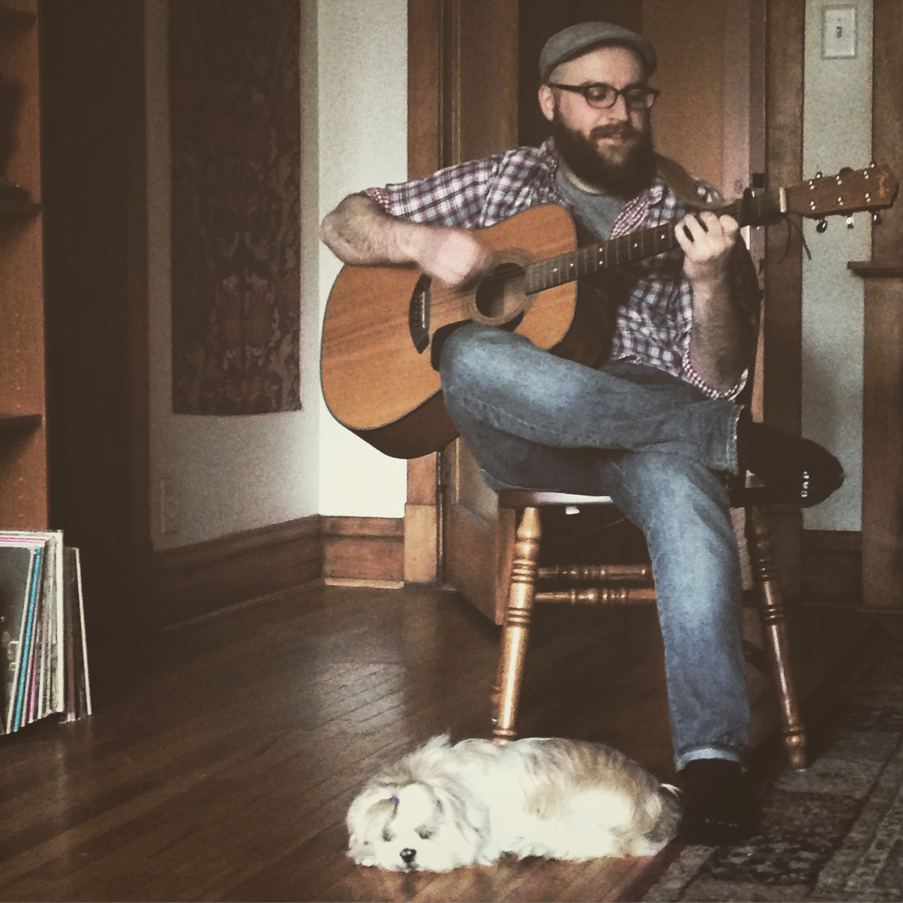
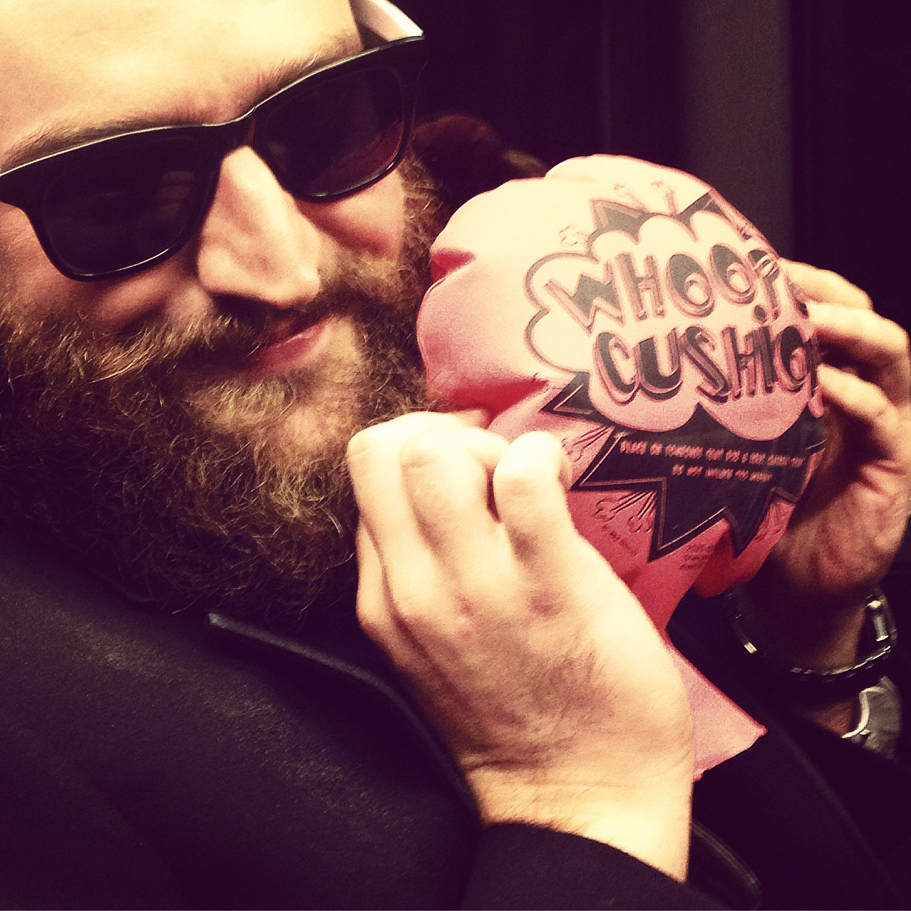

This is a rare selfie of myself, my girlfriend JJ, and our two dogs we have join custody of with JJ's mother. When I am not coding I spend most of my time with my tiny little multi species family.
Kiwi is a Shih Tzu with really bad anxiety. If its raining she can usually be found huddled in a corner. One thing I found that really helped relax both of us in times of need is strumming on my guitar. She usually comes and sleeps by my feet when I play. So we are less of a band and more of a therapy group.
I really like whoopi cushions. There is not much more to say about that. I could probably play with one for hours. When I'm not coding or with my family I can usually be found playing with a whoopi cushion.